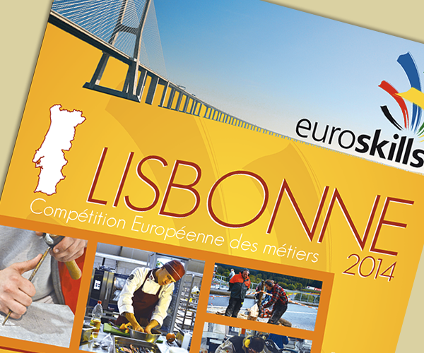
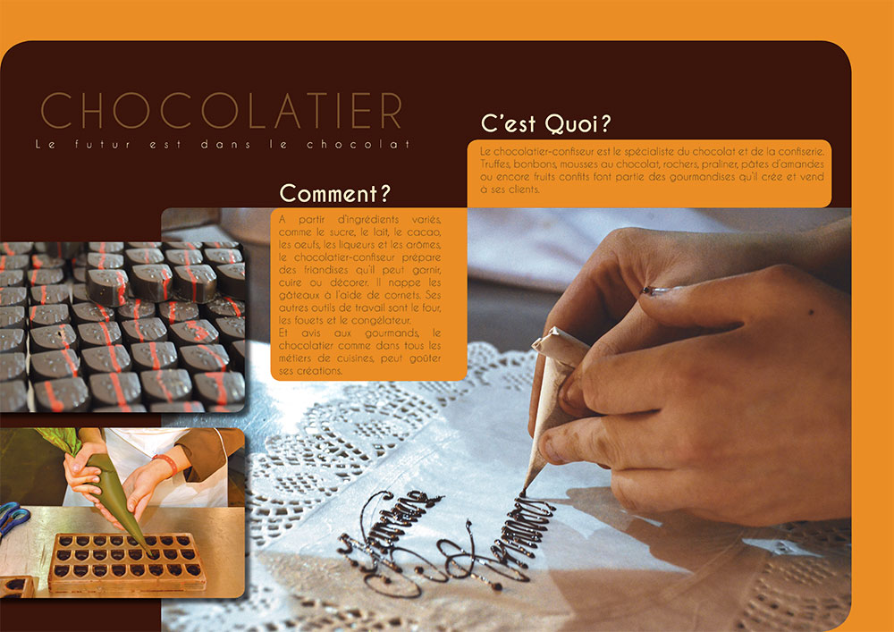
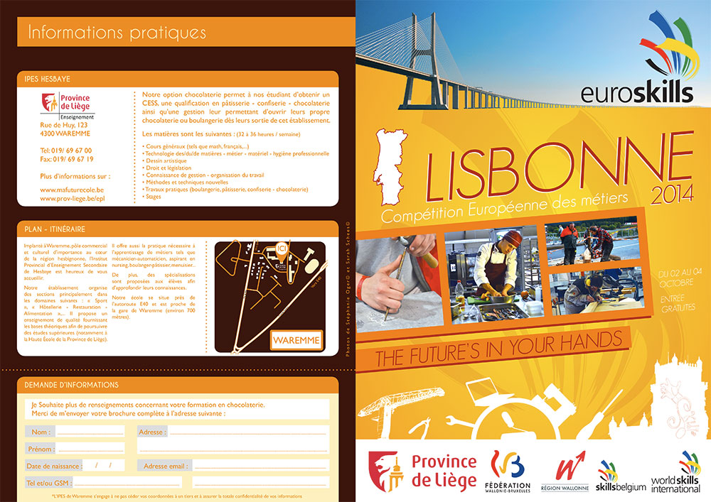

Informations sur le projet

Accéder au site
En dernière année de mon cursus à l’école secondaire de Saint-Luc à Liège, j'ai eu l’occasion de me rendre avec l’école à la compétition européenne des métiers : Euroskills qui se déroulait à Spa-francorchamp.
En dehors de la création “à la chaine” de pins personnalisé pour les étudiants et autres personnes qui s’arrêtaient à notre stand, nous avions chacun un projet à réaliser qui consistait en la réalisation d’une affiche promotionnelle fictive pour une autre compétition Euroskills. Pour cela, j'ai dû choisir aussi un métier à présenter dans un dépliant explicatif.
Aussi, j’ai travailler avec deux élèves de la section photographie et réaliser un site Internet avec Wix.
Trêve d’explications, je vous propose de découvrir le projet.

